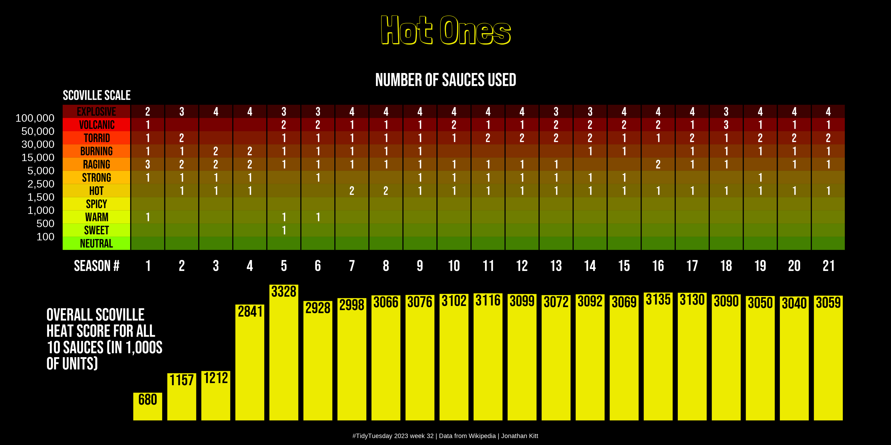

# Load the packages
library(tidyverse)
library(showtext)
library(patchwork)Introduction
The #TidyTuesday weekly challenge is organised by the R4DS (R for Data Science) Online Learning Community.
Every tuesday throughout the year, participants work on a common dataset and share the plots they create.
The dataset for this challenge comes from Wikipedia articles.
Getting the data
First of all, let’s load the packages we’ll be using :
{tidyverse} to clean the data and create the plots
{showtext} to change the fonts used
If you don’t have these packages installed, simply use the install.packages() function.
We also load the fonts we will use in the plots: Bebas Neue for the text and Londrina Shadow for the title.
# Import the fonts
font_add_google("Bebas Neue", "Bebas Neue")
font_add_google("Londrina Shadow", "Londrina Shadow")
showtext_auto()We can now download the dataset :
# Download the dataset
sauces <- read_csv('https://raw.githubusercontent.com/rfordatascience/tidytuesday/master/data/2023/2023-08-08/sauces.csv')The dataset has 210 observations (rows) and 4 variables (columns).
Each row represents one sauce used in the show.
The 4 variables are:
The season number (1 to 21)
The sauce number (1 to 10, ordered from the least hot to the hottest)
The sauce name
The Scoville score (sauce rating in Scoville heat units)
Cleaning the data
We use the following code to clean the data:
# Data cleaning and prep - Sauces per season ----
# Scoville scale
scoville_scale <- tibble(
evaluation = c("01-Neutral", "02-Sweet", "03-Warm", "04-Spicy",
"05-Hot", "06-Strong", "07-Raging", "08-Burning",
"09-Torrid", "10-Volcanic", "11-Explosive"))
# Count number of sauces for each Scoville scale range per season
sauces_count <- sauces |>
# Create categories for scoville scores
mutate(evaluation = case_when(scoville < 100 ~ "01-Neutral",
between(scoville, 100, 499) ~ "02-Sweet",
between(scoville, 500, 999) ~ "03-Warm",
between(scoville, 1000, 1499) ~ "04-Spicy",
between(scoville, 1500, 2499) ~ "05-Hot",
between(scoville, 2500, 4999) ~ "06-Strong",
between(scoville, 5000, 14999) ~ "07-Raging",
between(scoville, 15000, 29999) ~ "08-Burning",
between(scoville, 30000, 49999) ~ "09-Torrid",
between(scoville, 50000, 99999) ~ "10-Volcanic",
scoville >= 100000 ~ "11-Explosive")) |>
# Count number of occurences per season and evaluation
count(season, evaluation) |>
# Add full Scoville scale
right_join(scoville_scale) |>
# Add non-existing scoville categories and fill empty cells with 0
complete(season, evaluation, fill = list(n = 0)) |>
# Remove NAs
filter(!is.na(season))
# p1 - Background
p1_bg <- scoville_scale |>
# Coordinates for rectangles
mutate(x1 = 0, x2 = 4, x3 = 46,
y1 = seq(0, 20, 2), y2 = seq(2, 22, 2)) |>
# Split evaluation column into grade + evaluation
separate(evaluation, into = c("grade", "evaluation"))
# p1 - Grid
p1_grid <- tibble(x0 = seq(4, 46, 2),
x1 = x0,
y0 = 0,
y1 = 22)
# p1 - Sauce count
p1_count <- sauces_count |>
# Split evaluation column into grade + evaluation
separate(evaluation, into = c("grade", "evaluation")) |>
# Add coordinates
mutate(y = rep(seq(1, 21, 2), times = 21)) |>
# Order by grade and season
arrange(grade, season) |>
# Add coordinates
mutate(x = rep(seq(5, 45, 2), times = 11)) |>
# Remove empty rows
filter(n != 0)
# p1 - Axis y text
p1_y_labels <- tibble(x = -0.5,
y = seq(2, 20, 2),
score = c("100", "500", "1,000", "1,500", "2,500", "5,000",
"15,000", "30,000", "50,000", "100,000"))
# Data cleaning and prep - Total score per season ----
# p2 - scores
p2_scores <- sauces |>
# Calculate cumulative Scoville score for all 10 sauces per season
summarise(total = sum(scoville), .by = season) |>
# Add coordinates + round to thousands of units
mutate(x = seq(5, 45, 2),
total_thsd = plyr::round_any(total, 1000) / 1000)
# p2 - x axis labels
p2_x_labels <- tibble(x = c(2, seq(5, 45, 2)),
y = 3800,
label = c("Season #", 1:21))
# p2 - text
p2_text <- tibble(x = -0.95,
y = c(2600, 2200, 1800, 1400),
label = c("Overall Scoville",
"heat score for all",
"10 sauces (in 1,000s",
"of units)"))Creating the plot
First we create a vector with custom colours:
custom_cols <- c("Neutral" = "#86ff00",
"Sweet" = "#bcff00",
"Warm" = "#ddfa00",
"Spicy" = "#edeb00",
"Hot" = "#eecb00",
"Strong" = "#ffbf03",
"Raging" = "#ff9000",
"Burning" = "#ff6100",
"Torrid" = "#fe3000",
"Volcanic" = "#ee0000",
"Explosive" = "#790200")We then create the first plot:
# Create plot - p1 ----
p1 <- ggplot() +
geom_rect(data = p1_bg,
aes(xmin = x1, xmax = x2, ymin = y1, ymax = y2,
fill = evaluation),
show.legend = FALSE) +
geom_rect(data = p1_bg,
aes(xmin = x2, xmax = x3, ymin = y1, ymax = y2,
fill = evaluation),
alpha = 0.5, show.legend = FALSE) +
geom_segment(data = p1_grid,
aes(x = x0, xend = x1, y = y0, yend = y1)) +
geom_text(data = p1_bg,
aes(x = 2, y = y1 + 1, label = evaluation),
colour = "black", family = "Bebas Neue", size = 14) +
geom_text(data = p1_count,
aes(x = x, y = y, label = n),
colour = "white", family = "Bebas Neue", size = 14) +
geom_text(data = p1_y_labels,
aes(x = x, y = y, label = score),
size = 12, hjust = 1, colour = "white") +
geom_text(aes(x = 2, y = 23.5, label = "Scoville scale"),
family = "Bebas Neue", size = 16, hjust = 0.5, colour = "white") +
scale_fill_manual(values = custom_cols) +
xlim(-1, 46) +
labs(title = "Number of sauces used") +
theme_void() +
theme(panel.background = element_rect(fill = "black"),
plot.background = element_rect(fill = "black"),
plot.title = element_text(family = "Bebas Neue", colour = "white",
size = 60, hjust = 0.5, margin = margin(t = 20)))We now create the second plot:
# Create plot - p2 ----
p2 <- ggplot() +
geom_rect(data = p2_scores,
aes(xmin = x - 0.85, xmax = x + 0.85,
ymin = 0, ymax = total_thsd),
fill = "#edeb00") +
geom_text(data = p2_scores,
aes(x = x, y = total_thsd - 160, label = total_thsd),
family = "Bebas Neue", colour = "black", size = 18) +
geom_text(data = p2_x_labels,
aes(x = x, y = y, label = label),
family = "Bebas Neue", colour = "white", size = 18) +
geom_text(data = p2_text,
aes(x = x, y = y, label = label),
family = "Bebas Neue", colour = "white", size = 20,
hjust = 0) +
xlim(-1, 46) +
theme_void() +
theme(panel.background = element_rect(fill = "black"),
plot.background = element_rect(fill = "black"))We use the {patchwork} package to assemble the plots:
# Assemble plots
p <- p1 / p2 +
plot_annotation(title = "Hot Ones",
caption = "#TidyTuesday 2023 week 32 | Data from Wikipedia | Jonathan Kitt",
theme = theme(panel.background = element_rect(fill = "black", colour = "black"),
plot.background = element_rect(fill = "black", colour = "black"),
plot.title = element_text(family = "Londrina Shadow",
size = 125, hjust = 0.5,
colour = "#edeb00",
margin = margin(t = 10)),
plot.caption = element_text(size = 20, colour = "white", hjust = 0.5)))
# Export plot
ggsave("figs/tt_2023_w32_hot_ones.png", p, dpi = 320, width = 12, height = 6)And here’s the result!
